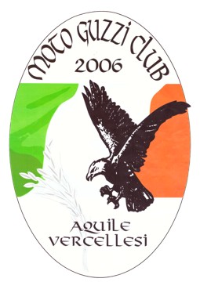

Motorbike Vercelli Via Trino 200
La tua moto.Il tuo mondo.
Moto nuove e usate, caschi, abbigliamento e officina.
Tutta la tua passione, in un vero negozio a Vercelli.
Two wheels, endless fun.
Proposta dimostrativa non ufficialeParliamone: 0161 294987Il negozio
Ogni strada ha
il suo equipaggiamento.
Sei reparti, un unico punto di riferimento.
Confronta, prova, scegli con noi.

Caschi
Cinque tipologie. La calzata si trova provandoli.

Abbigliamento
Dalla giacca ai guanti. Equipaggiati per la tua strada.

Moto
Nuove e usate. La prossima si sceglie da vicino.

Interfoni
Con il passeggero o in gruppo. Parti dal tuo casco.

Cross
Equipaggiamento Fox e caschi per il fuoristrada.

Accessori
Pneumatici, lubrificanti, scarichi e ricambi.
Le immagini raccontano i reparti. Modelli e disponibilità si verificano direttamente in negozio.

L’officina
La tua moto.
Chi se ne
prende cura.
Non solo la prossima moto. Anche il posto a cui affidare la sua manutenzione, qui in Via Trino.
- Tagliandi ufficiali
- Cambio pneumatici
- Ricambi originali
Interventi e appuntamenti si concordano direttamente con l’officina.
Da vicino è un’altra cosa
Una foto aiuta.
La prova fa
la differenza.
La calzata di un casco. La taglia di una giacca. La posizione su una moto. In negozio puoi confrontare quello che cerchi e parlarne con chi conosce il mondo delle due ruote.
Entra nel mondo Motorbike
Compagni di strada
Una passione che si incontra.
Motorbike è sede del Moto Guzzi Club Aquile Vercellesi.
Passa per conoscere il club e le sue attività.
Orari pubblicati
- Lunedì
- 15:30 – 19:30
- Martedì – sabato
- 09:00 – 12:00
15:30 – 19:30 - Domenica
- Chiuso
Per festività o variazioni, chiama prima di partire.
Tutti i contatti e la mappa